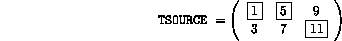
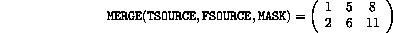

MERGE(TSOURCE,FSOURCE,MASK)
This function merges two arrays under mask control. TSOURCE, FSOURCE and MASK must all conform and the result is TSOURCE where MASK is .TRUE. and FSOURCE where it is .FALSE..
Consider,
INTEGER, DIMENSION(2,3) :: TSOURCE, FSOURCE
LOGICAL, DIMENSION(2,3) :: MASK
LOGICAL, PARAMETER :: T = .TRUE.
LOGICAL, PARAMETER :: F = .FALSE.
TSOURCE = RESHAPE((/1,3,5,7,9,11/), (/2,3/))
FSOURCE = RESHAPE((/0,2,4,6,8,10/), (/2,3/))
MASK = RESHAPE((/T,F,T,F,F,T/), (/2,3/))
Now, as
the highlighted elements are selected from the two source arrays,

and
thus
